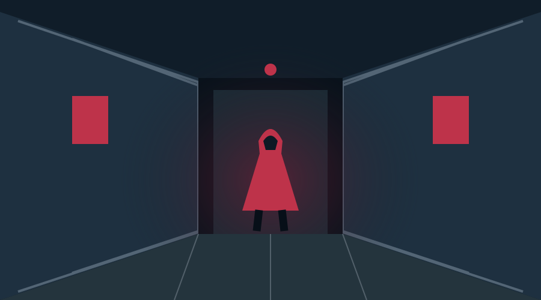
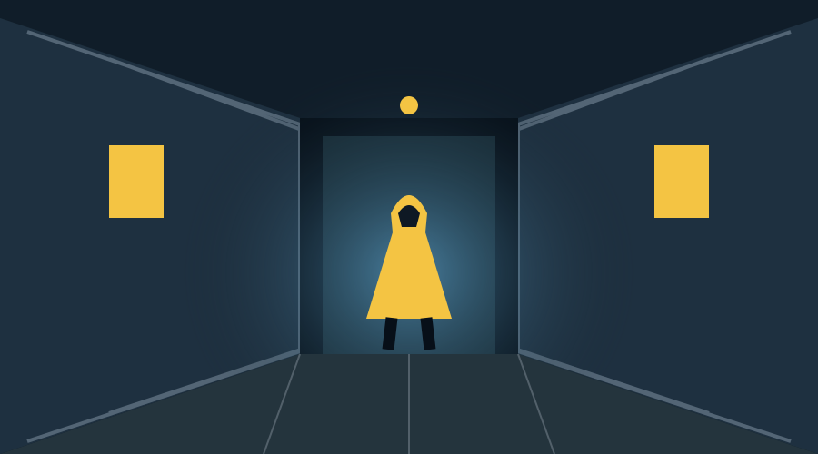

DET HANDLER
OM FORSKELLENE.
Protanopi er en form for rødblindhed. Nogle farveforskelle kan være svære at se — også når de spiller en rolle i en film.
Festivalens koncept bruger daltonisering: udvalgte farvenuancer flyttes, så forskelle bliver tydeligere. Det genskaber ikke normalt farvesyn.
Prøv illustrationen. Den viser princippet med det samme motiv og to forskellige farvevalg.


Illustration af princippet — ikke en valideret protanopi-simulering eller en demonstration af en færdig filmbehandling. Brug også piletasterne.
Et fællesskab på tværs af farvesyn
DU BEHØVER IKKE
SE DET SAMME.
Forstå forskellen
En fælles introduktion forklarer tanken bag tilpasningen før aftenens film.
Oplev sammen
Tag en ven med. Festivalen er åben for alle fra 18 år, uanset farvesyn.
Tal om det bagefter
Del dine oplevelser i pausen, til quizzen eller ved aftenens afslutning.